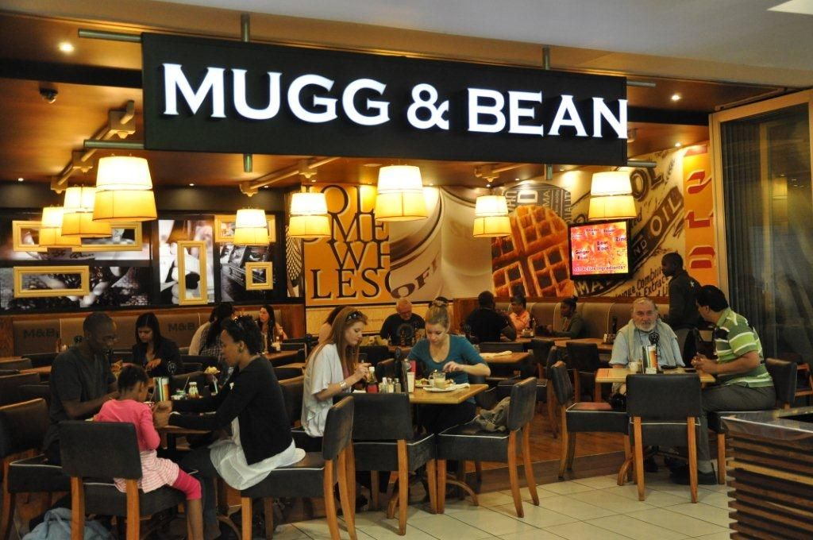
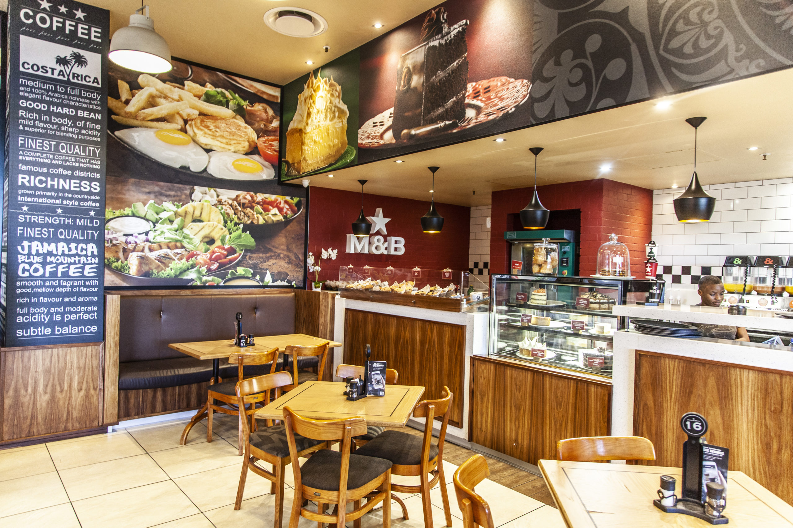
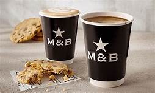
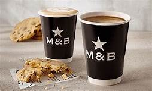

MUGG AND BEAN
Mugg & Bean is a place where customers become regulars and regulars become friends. We are your home away from home, the place where you’ll always get more and more. We’ve gone the extra mile to bring you all your familiar favourites as well as the latest food innovations and seasonal meals. Each plate is generously stacked with fresh ingredients of the highest quality so that you can enjoy more of that nutritious taste. We’re serious about coffee and we take care to hand select the best single origin beans and international blends from the finest coffee producing regions all over the world. Then we roast them locally before our professionally trained baristas pour the perfect cappuccino, just for you. Want more? Order a Bottomless coffee or cold drink and find an excuse to stay a while longer.
When it comes to decadent treats, we’ve been baking every cake, cookie, muffin and croissant from scratch in each of our restaurants since day one. Some of our recipes have even been in use for over 20 years, because there’s no point in meddling with perfection. With our Generosity App you’re sure to get even more out of every visit. By scanning your bill you’ll earn Bean Rewards, which you can spend on your favourites. Pay through the App by linking a card or send gift vouchers to friends and family. At Mugg & Bean you’ll always enjoy the taste of more and more.
It all started in the early 90s when Ben Filmalter and his wife Judi took a trip to Chicago. There they discovered a unique little coffee shop that prided itself on its spirit of generosity. Inspired by this, Ben came back home and opened the first Mugg & Bean in 1996 at the V&A Waterfront in Cape Town. Since day one, we’ve embodied this spirit of generosity with our ample portions, Bottomless coffees and cold drinks, and with our Generosity app which allows you to earn rewards with every visit. But Ben wanted more than just a restaurant or coffee shop. He wanted a place where people arrived as customers and left as friends, where they could unwind, relax and reconnect. This seed of generosity sprouted and has continued to grow for more than 20 years now. In 2020 there are now over 200 Mugg & Bean restaurants nationwide and you can also find a Mugg & Bean in Kenya, Botswana and even the united Arab Emirates. Mugg & Bean is the place where you are always welcome, where you always get more and more. For this we raise our Bottomless mugs to Ben, a man who will always be remembered as Mr Generosity.
 
 
BACK

BACK